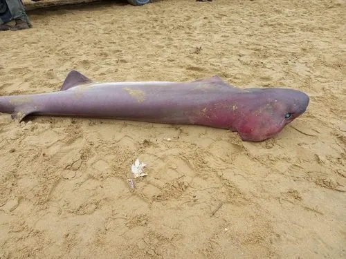

鱼类 · 动物界
六鳃鲨 Hexanchus griseus

保留六对鳃裂的原始型鲨鱼，体色灰褐、吻部钝圆，白天栖于数百米深的大陆坡，夜间上浮捕食，是现存最古老的鲨类之一。
- 分类
- 门脊索动物门纲软骨鱼纲目六鳃鲨目科六鳃鲨科属六鳃鲨属
- 栖息环境
- 大陆坡与岛屿斜坡的深水底层，夜间上浮至较浅水层
- 地理分布
- 全球温带与热带海域，包括大西洋、地中海、印度洋与太平洋
- 保护级别
- IUCN 近危（NT）
物种志
六鳃鲨体形粗壮呈鱼雷状，成年体长 3–5 米，最大可超过 5.5 米，雌性略大，体重 200–500 千克。与多数鲨鱼只有五对鳃裂不同，它有六对鳃裂，因此得名；吻部短而钝圆，眼小且具绿色反光，背鳍小而靠后，尾鳍上叶极长，呈镰刀状。体色灰褐至深褐，腹面浅灰，皮肤粗糙。
它们分布于全球温带与热带海域的大陆坡与岛屿斜坡，白天多栖于 200–1000 米的深水，夜间垂直上浮到较浅水层捕食。食性广，捕食鱼类、鱿鱼、虾、蟹、鳐类，也会撕食鲸类与大型鱼类的腐肉，粗壮的牙呈锯状，适于切割。繁殖为卵胎生，每胎可达数十尾，妊娠期可能超过一年。由于深海捕捞的兼捕与极低的繁殖率，其种群状况受到关注，部分区域已明显减少。
形态与习性
- 体长约 3–5 m，最大可超过 5.5 m
- 体重约 200–500 kg
- 食性鱼类、鱿鱼、虾蟹、鳐类，也撕食腐肉
- 繁殖卵胎生，每胎可达数十尾，妊娠期可能超过一年
- 栖深白天多在 200–1000 m，夜间上浮捕食
- 鳃裂六对鳃裂，比多数鲨鱼多一对
- 寿命估计可达 50 年以上
趣味知识
- 六鳃鲨有六对鳃裂，比绝大多数鲨鱼多一对，是原始特征的遗留。
- 它白天待在几百米深的黑暗水层，夜里才上浮到浅水捕食。
- 它的下颚牙齿像一把锯子，能切开大型猎物的皮肉。